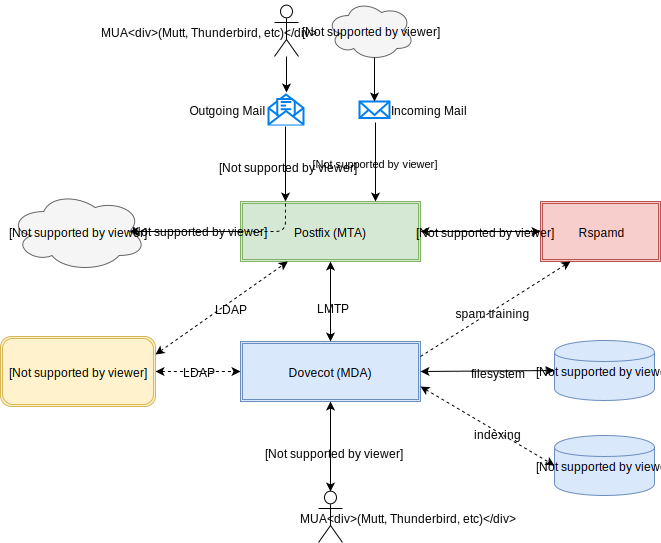

How To Run Your Own Mail Server
A guide to self-hosting your email on FreeBSD using Postfix, Dovecot, Rspamd, and LDAP.
Getting off GMail is one of the best ways to take back your data in the face of dragnet surveillance. Unfortunately, it's also one of the most difficult. If you search for "how to run your own mail server," many of the results will tell you it's simply too difficult to reliably do it yourself.
Luckily, running your own mail server is not as daunting as many would have you believe. After all, that is how email is designed to work. Email is perhaps the most successful federated, decentralized protocol to ever exist. It's a shame we've allowed a centralized, monolithic advertising company to obtain a near monopoly on such a great technology. Luckily, I've spent the last few years tweaking my mail server setup, and I'm willing to enable your laziness in the spirit of a more free and open internet.
Before we dive in, an important caveat: You will become a sysadmin of your own mail server. If you screw something up, you might not be able to send or receive email. Sure, if all else fails, you can admit defeat and point your MX records at a Google Apps account and carry on. However, you run the risk of losing emails in the interim. I'm going to try to make this guide as foolproof as possible, but if you're not comfortable assuming this responsibility, it might be best to leave it to the experts.
With that out of the way, here's what this guide will get you:
- Opportunistic TLS for sending/receiving email with Postfix
- Access to your email anywhere using IMAP with Dovecot
- Fast, modern spam filtering with Rspamd
- Full-text search of your mailbox with Apache Solr
- DKIM, SPF, and DMARC records to ensure your outgoing mail is not spam-filtered
- Statistical training of your spam filter based on what you move in/out of the Junk folder
- Custom email sorting/filtering using sieve
After running this setup for year or so, I have found many aspects to be better than GMail. I think the spam filtering works better, and being able to write a sieve script to sort your inbox is a godsend compared to GMail's convoluted filter system. And as Google occasionally seems to suspend the accounts of those with opinions they don't like, you'll have peace of mind with all your mail on a system you control.
A final note: I run everything on FreeBSD, so you may have to massage some of the commands to work on your Linux flavor of choice, if that's your thing. All the software used is open source, and should run equally well on any Unix-like OS.
- Overview
- DNS Records
- Postfix: The Mail Transfer Agent
- Dovecot: The Mail Delivery Agent
- Solr: Full-Text Search
- Rspamd: Spam Filtering
- DKIM: Validation for Your Outgoing Mail
- Sieve: Scripting Your Mailbox
- Conclusion
Overview
Now, take a deep breath, and feast your eyes on this convoluted Rube Goldberg machine of an email system which you will soon bring lumbering to life: 
Let's walk through the architecture. All email (whether sent or received) first goes through Postfix - the Mail Transfer Agent (MTA). Postfix is responsible for transferring email to wherever it's supposed to go. If the recipient domain's mailbox is on our own server, Postfix will accept the message for delivery. Otherwise, Postfix will relay the message to the recipient's mail server.
If you are sending an email to someone, you connect to Postfix over SMTP with mandatory STARTTLS encryption on port 587. After successfully validating your username and password, Postfix will accept your message to relay to the recipient's mail server over SMTP using opportunistic TLS. ("Opportunistic" means that we will use encryption if the other side supports it, and fall back to plaintext if they don't.)
If you are receiving an email from someone, the sender's mail server will connect to Postfix over SMTP with opportunistic TLS on port 25. After doing some basic security and spam checks (like prohibiting unauthorized relaying and ensuring the other side has valid DNS records in place), Postfix will accept the message for delivery.
Whether a message is relayed (you sent an email to someone) or accepted for delivery (someone sent an email to you), it is first filtered through the rspamd milter. (milter is just a term for a Postfix mail filter.) For incoming mail, rspamd does some spam checking and may flag the message as spam or reject it altogether. For outgoing mail, rspamd just takes care of the DKIM signing (discussed in the DKIM section).
If an accepted email makes it through the rspamd milter, it is delivered to Dovecot - the Mail Delivery Agent (MDA) - using a local unix domain socket. Dovecot takes the emails from Postfix and stores them in the user's mailbox. The mailbox can be stored on the filesystem in a few different formats - with Maildir and mbox being commonly used. Dovecot provides remote access to your mailbox using the POP3 and IMAP protocols. In addition, it supports automatic mail filtering using custom sieve scripts.
When Dovecot receives a message, it first passes it to the Solr server, which indexes it for future full-text searches. Then, a sieve script will run which automatically places mail with the X-SPAM header into the user's Junk folder. In addition, when a user moves a message in or out of their Junk folder, Dovecot will inform rspamd to re-train a message as spam or ham. POP3 is ancient history, so in our setup we'll only expose our emails over SSL-secured IMAP.
I run a local LDAP server, which allows me to use a single username and password for all my self-hosted apps. In this guide, I'll describe how to store your mail credentials and email aliases in LDAP. However, it's just as easy to store this information in a relational database or flat files.
A quick note: Dovecot supports IMAP IDLE, which provides a pseudo-push functionality to get notified of new mail "instantly." While this works for most desktop mail clients, such as mutt and OS X's Mail.app, it isn't supported by mobile clients (with Android's K-9 Mail being a notable exception). There is an open-source implementation of the Exchange ActiveSync protocol called Z-Push, which integrates with your IMAP server to provide push notifications to iOS and Android devices.
I ran Z-Push for a few months, but there were enough small bugs (along with the hassle of running PHP in production) to make me uninstall it. Setting my iPhone to check for new mail every 15 minutes is plenty fast for me, and I still have about 40% battery left at the end of the day. However, if you are dead set on having instant email notifications, it might be something to look into. It works well enough, I just didn't find it worth the trouble.
EDIT (20 Sep 2017): I've got native push notifications working on iOS. See this blog post for a step-by-step guide.
Finally, all the examples in this guide will use the example.com domain and non-routable IP addresses. Obviously, you'll need to acquire your own domain name and public IP address for your mail server, and modify my examples accordingly. All commands in this guide should be run as root unless otherwise specified.
DNS Records
First, you will need to set some DNS records so that other mail servers know where to send your email. If you use a hidden master server to host your DNS like I do, you can just edit your zone file and reload BIND. Otherwise, you can set these records in your DNS provider's management portal.
You probably want to set a low TTL (around 60 seconds) until you've verified everything is working correctly. It's very annoying to realize you typed the wrong IP address and then have to wait 3 hours for the TTL to expire in order to test again.
The first thing you'll need is an MX record. MX records tell other mail servers which hosts are running mail servers for a given domain. You can specify multiple MX records, each with their own priority, to use as fallback mail servers when your primary one is down. For my example.com domain, I only have a single mail server, mail.example.com, so in my zone file I have a single MX record. Of course, you will need to substitute your own IP address and domain name.
/usr/local/etc/named/master/example.com.db$TTL 10800 $ORIGIN example.com. @ 1D IN SOA ns1.example.com. root.example.com. ( 2017080802 ; serial 1d ; refresh 3m ; retry 1w ; expire 3h ; minimum ) IN MX 10 mail.example.com. ; host definitions @ IN A 203.0.113.41 @ IN AAAA 2001:db8::2 mail IN A 203.0.113.42 mail IN AAAA 2001:db8::3
It is critically important that you have reverse DNS records for your mail server host. If your reverse DNS records do not point back to your mail server, other mail servers may reject your email as spam. Normally, you can set reverse DNS records in your hosting provider's web portal. Make sure to set reverse DNS for both the IPv4 and IPv6 address of your mail server.
Your mail server's reverse DNS and fully qualified domain name don't have to match exactly, but your hostname in reverse DNS should probably resolve to the same IP as your MX record. Your best bet is to have it point straight back to your mail server's hostname. You can verify your reverse DNS record using the dig command:
dig +short -x 203.0.113.42
# mail.example.com.
However, just having any reverse DNS record in place is enough for most mail servers to accept your mail.
You will also need to set an SPF record for your mail server. While an SPF record is not technically required for your mail server to work, having one in place significantly reduces the likelihood of your mail being rejected as spam. An SPF record tells other mail servers which hosts are allowed to send mail on behalf of your domain. In my case, I have a single mail server, and I want others to accept mail from that server only. So my SPF record looks like this:
/usr/local/etc/named/master/example.com.db@ IN TXT "v=spf1 mx -all"
This indicates that only my MX records (mail.example.com) are allowed to send mail for example.com, and mail coming from anywhere else should be assumed to be spam and rejected. You can add your SPF definition as a TXT record in your DNS provider's web portal (without the quotes).
Postfix: The Mail Transfer Agent
Now we're ready to install and configure some software. I install my packages from FreeBSD ports, so substitute the appropriate commands for your package manager of choice. First, bring everything up to date:
portsnap fetch && portsnap update portmaster -aBd
Postfix will be responsible for sending and receiving mail for our domain over SMTP. Install it from ports:
cd /usr/ports/mail/postfix make install clean
For my setup, I use the following build options: LDAP PCRE PGSQL TLS.
Once you've watched the magic text scroll for a few minutes, postfix should be installed. Navigate to it's configuration directory and edit the config file. (On FreeBSD, software packages from ports are always installed under the /usr/local prefix. It should be under /etc/postfix if you're on Linux.)
cd /usr/local/etc/postfix vim main.cf
Below is what I have in my main.cf. I've given you some brief commentary on what all the config options do, but you can always check the man page if you need more details on something. This is a pretty standard virtual users setup. Rather than host mail for actual unix accounts on the server, postfix will use an external database (LDAP, in my case) to determine which email addresses it should accept mail for.
When a message is accepted for delivery, postfix hands it off to Dovecot. Postfix will also use Dovecot's auth mechanism to authenticate SMTP users. We'll configure the LDAP authentication in the Dovecot section and let postfix just re-use it.
We'll set some standard spam-proofing and security options here as well, but we'll be coming back to this file when we set up rspamd in the section below.
/usr/local/etc/postfix/main.cf# "2" is current for postfix 3.2 configs compatibility_level = 2 # disable "new mail" notifications for local unix users biff = no # directory to store mail for local unix users mail_spool_directory = /var/mail/local # Name of this mail server, used in the SMTP HELO for outgoing mail. Make # sure this resolves to the same IP as your reverse DNS hostname. myhostname = mail.example.com # Domains for which postfix will deliver local mail. Does not apply to # virtual domains, which are configured below. Make sure to specify the FQDN # of your sever, as well as localhost. # Note: NEVER specify any virtual domains here!!! Those come later. mydestination = awesomebox.example.com, localhost.example.com, localhost # Domain appended to mail sent locally from this machine - such as mail sent # via the `sendmail` command. myorigin = awesomebox.example.com # prevent spammers from searching for valid users disable_vrfy_command = yes # require properly formatted email addresses - prevents a lot of spam strict_rfc821_envelopes = yes # don't give any helpful info when a mailbox doesn't exist show_user_unknown_table_name = no # limit maximum e-mail size to 50MB. mailbox size must be at least as big as # the message size for the mail to be accepted, but has no meaning after # that since we are using Dovecot for delivery. message_size_limit = 51200000 mailbox_size_limit = 51200000 # require addresses of the form "user@domain.tld" allow_percent_hack = no swap_bangpath = no # allow plus-aliasing: "user+tag@domain.tld" delivers to "user" mailbox recipient_delimiter = + # path to the SSL certificate for the mail server smtpd_tls_cert_file = /usr/local/etc/ssl/certs/mail.example.com.rsa.crt smtpd_tls_key_file = /usr/local/etc/ssl/certs/mail.example.com.rsa.key # I have two certificates - one is RSA, the other uses the newer ECC. ECC is # faster and arguably more secure, but many mail servers don't yet support # it. I enable both types in postfix, but you most likely only have a single # RSA cert, and don't need to include these three lines. smtpd_tls_eccert_file = /usr/local/etc/ssl/certs/mail.example.com.ecc.crt smtpd_tls_eckey_file = /usr/local/etc/ssl/certs/mail.example.com.ecc.key smtpd_tls_eecdh_grade = ultra # Path to your trusted certificates file. Usually provided by a # ca-certificates package or similar. smtp_tls_CAfile=/etc/ssl/cert.pem # These two lines define how postfix will connect to other mail servers. # DANE is a stronger form of opportunistic TLS. You can read about it here: # http://www.postfix.org/TLS_README.html#client_tls_dane smtp_tls_security_level = dane smtp_dns_support_level = dnssec # DANE requires a DNSSEC capable resolver. If your DNS resolver doesn't # support DNSSEC, remove the above two lines and uncomment the below: # smtp_tls_security_level = may # IP address used by postfix to send outgoing mail. You only need this if # your machine has multiple IP addresses - set it to your MX address to # satisfy your SPF record. smtp_bind_address = 203.0.113.42 smtp_bind_address6 = 2001:db8::3 # Here we define the options for "mandatory" TLS. In our setup, TLS is only # "mandatory" for authenticating users. I got these settings from Mozilla's # SSL reccomentations page. # # NOTE: do not attempt to make TLS mandatory for all incoming/outgoing # connections. Do not attempt to change the default cipherlist for non- # mandatory connections either. There are still a lot of mail servers out # there that do not use TLS, and many that do only support old ciphers. # Forcing TLS for everyone *will* cause you to lose mail. smtpd_tls_mandatory_protocols = !SSLv2, !SSLv3, !TLSv1, !TLSv1.1, TLSv1.2 smtpd_tls_mandatory_ciphers = high tls_high_cipherlist = ECDHE-ECDSA-AES256-GCM-SHA384:ECDHE-RSA-AES256-GCM-SHA384:ECDHE-ECDSA-CHACHA20-POLY1305:ECDHE-RSA-CHACHA20-POLY1305:ECDHE-ECDSA-AES128-GCM-SHA256:ECDHE-RSA-AES128-GCM-SHA256:ECDHE-ECDSA-AES256-SHA384:ECDHE-RSA-AES256-SHA384:ECDHE-ECDSA-AES128-SHA256:ECDHE-RSA-AES128-SHA256 # allow other mail servers to connect using TLS, but don't require it smtpd_tls_security_level = may # tickets and compression have known vulnerabilities tls_ssl_options = no_ticket, no_compression # it's more secure to generate your own DH params smtpd_tls_dh512_param_file = /usr/local/etc/ssl/dh512.pem smtpd_tls_dh1024_param_file = /usr/local/etc/ssl/dh2048.pem # cache incoming and outgoing TLS sessions smtpd_tls_session_cache_database = btree:${data_directory}/smtpd_tlscache smtp_tls_session_cache_database = btree:${data_directory}/smtp_tlscache # enable SMTPD auth. Dovecot will place an `auth` socket in postfix's # runtime directory that we will use for authentication. smtpd_sasl_auth_enable = yes smtpd_sasl_path = private/auth smtpd_sasl_type = dovecot # only allow authentication over TLS smtpd_tls_auth_only = yes # don't allow plaintext auth methods on unencrypted connections smtpd_sasl_security_options = noanonymous, noplaintext # but plaintext auth is fine when using TLS smtpd_sasl_tls_security_options = noanonymous # add a message header when email was recieved over TLS smtpd_tls_received_header = yes # require that connecting mail servers identify themselves - this greatly # reduces spam smtpd_helo_required = yes # The following block specifies some security restrictions for incoming # mail. The gist of it is, authenticated users and connections from # localhost can do anything they want. Random people connecting over the # internet are treated with more suspicion: they must have a reverse DNS # entry and present a valid, FQDN HELO hostname. In addition, they can only # send mail to valid mailboxes on the server, and the sender's domain must # actually exist. smtpd_client_restrictions = permit_mynetworks, permit_sasl_authenticated, reject_unknown_reverse_client_hostname, # you might want to consider: # reject_unknown_client_hostname, # here. This will reject all incoming connections without a reverse DNS # entry that resolves back to the client's IP address. This is a very # restrictive check and may reject legitimate mail. reject_unauth_pipelining smtpd_helo_restrictions = permit_mynetworks, permit_sasl_authenticated, reject_invalid_helo_hostname, reject_non_fqdn_helo_hostname, # you might want to consider: # reject_unknown_helo_hostname, # here. This will reject all incoming mail without a HELO hostname that # properly resolves in DNS. This is a somewhat restrictive check and may # reject legitimate mail. reject_unauth_pipelining smtpd_sender_restrictions = permit_mynetworks, permit_sasl_authenticated, reject_non_fqdn_sender, reject_unknown_sender_domain, reject_unauth_pipelining smtpd_relay_restrictions = permit_mynetworks, permit_sasl_authenticated, # !!! THIS SETTING PREVENTS YOU FROM BEING AN OPEN RELAY !!! reject_unauth_destination # !!! DO NOT REMOVE IT UNDER ANY CIRCUMSTANCES !!! smtpd_recipient_restrictions = permit_mynetworks, permit_sasl_authenticated, reject_non_fqdn_recipient, reject_unknown_recipient_domain, reject_unauth_pipelining, reject_unverified_recipient smtpd_data_restrictions = permit_mynetworks, permit_sasl_authenticated, reject_multi_recipient_bounce, reject_unauth_pipelining # deliver mail for virtual users to Dovecot's LMTP socket virtual_transport = lmtp:unix:private/dovecot-lmtp # LDAP query to find which domains we accept mail for virtual_mailbox_domains = ldap:/usr/local/etc/postfix/ldap-virtual-mailbox-domains.cf # LDAP query to find which email addresses we accept mail for virtual_mailbox_maps = ldap:/usr/local/etc/postfix/ldap-virtual-mailbox-maps.cf, hash:/usr/local/etc/postfix/system-virtual-mailboxes # LDAP query to find a user's email aliases virtual_alias_maps = ldap:/usr/local/etc/postfix/ldap-virtual-alias-maps.cf # We'll uncomment these when we set up rspamd later: # milter_protocol = 6 # milter_default_action = accept # smtpd_milters = unix:/var/run/rspamd/milter.sock # milter_mail_macros = i {mail_addr} {client_addr} {client_name} {auth_authen}
We'll need to create some of the files and directories we specified in this file:
# create the local mail spool mkdir /var/mail/local chown root:mail /var/mail/local chmod 775 /var/mail/local # create the dhparams openssl dhparam -out /usr/local/etc/ssl/dh512.pem 512 openssl dhparam -out /usr/local/etc/ssl/dh2048.pem 2048 chmod 644 /usr/local/etc/ssl/dh{512,2048}.pem
In master.cf, you can set service-specific overrides for the options you set in main.cf. We'll use this file to make encryption mandatory on the submission port (587). You can just change the lines below the smtp and submission declarations - no need to change anything else in this file.
/usr/local/etc/postfix/master.cf# disable authentication on port 25. This port should only be used by other # mail servers smtp inet n - n - - smtpd -o smtpd_sasl_auth_enable=no # on the authenticated submission port, force TLS and use our more secure # cipher list submission inet n - n - - smtpd -o smtpd_tls_security_level=encrypt -o tls_preempt_cipherlist=yes
Now we need to tell postfix which users and domains we want to accept mail for. I use LDAP, so the files below just tell postfix which queries to run to get the neccessary information. You can check out how I setup OpenLDAP here (another blog post I need to write). If you want to use flat files instead, you can use hash: instead of ldap: in the last three lines of main.cf shown above. You can then enter your users, domains, and aliases in plain text directly in those files, and "compile" them with the postmap command. Or you could put the information in a PostgreSQL database - there's plenty of online tutorials for that as well. You can read more details on the postfix virtual readme.
Anyway, if you're using LDAP, read on. I haven't spent much time perfecting my LDAP schema—I got a personal "single sign on" system working with it, and left it at that. If you have a more robust LDAP setup, you'll probably need to tweak these queries. The first file specifies which domains this server will accept mail for:
/usr/local/etc/postfix/ldap-virtual-mailbox-domains.cfserver_host = ldapi://%2fvar%2frun%2fopenldap%2fldapi/ search_base = ou=domains,dc=example,dc=com version = 3 bind = no query_filter = (&(ObjectClass=dNSDomain)(dc=%s)) result_attribute = dc
The next file specifies the mailboxes (email addresses) this server will accept mail for:
/usr/local/etc/postfix/ldap-virtual-mailbox-maps.cfserver_host = ldapi://%2fvar%2frun%2fopenldap%2fldapi/ search_base = ou=users,dc=example,dc=com version = 3 bind = no query_filter = (&(objectclass=inetLocalMailRecipient)(mail=%s)) result_attribute = mail
The last file specifies the aliases for those email addresses:
/usr/local/etc/postfix/ldap-virtual-mailbox-alias-maps.cfserver_host = ldapi://%2fvar%2frun%2fopenldap%2fldapi/ search_base = ou=users,dc=example,dc=com version = 3 bind = no query_filter = (&(objectclass=inetLocalMailRecipient)(mailLocalAddress=%s)) result_attribute = mail
The easiest way to set up your users and domains in LDAP is to set up an SSH tunnel to your server and run Apache Directory Studio. You can see how I have my domains set up in the query below:
$ ldapsearch -b dc=example.com,ou=domains,dc=example,dc=com # extended LDIF # # LDAPv3 # base <dc=example.com,ou=domains,dc=example,dc=com> with scope subtree # filter: (objectclass=*) # requesting: ALL # # example.com, domains, example.com dn: dc=example.com,ou=domains,dc=example,dc=com dc: example.com objectClass: dNSDomain objectClass: top # search result search: 2 result: 0 Success # numResponses: 2 # numEntries: 1
The next query shows how I have users configured. The username is specified by the uid parameter. mail contains the user's primary mailbox, and each mailLocalAddress entry specifies an email alias for the user.
$ ldapsearch -b uid=alphonsus,ou=users,dc=example,dc=com # extended LDIF # # LDAPv3 # base <uid=alphonsus,ou=users,dc=example,dc=com> with scope subtree # filter: (objectclass=*) # requesting: ALL # # alphonsus, users, example.com dn: uid=alphonsus,ou=users,dc=example,dc=com cn: Alphonsus Liguori givenName: Alphonsus mail: alphonsus@example.com mailLocalAddress: administrator@example.com mailLocalAddress: root@example.com mailLocalAddress: postmaster@example.com o: The Church Triumphant objectClass: person objectClass: organizationalPerson objectClass: inetOrgPerson objectClass: inetLocalMailRecipient sn: Liguori uid: alphonsus displayName: Alphonsus Liguori userPassword: e0HEfj4uiQyYSQxMCRTbHVTYXJshYf4aS4udX... # search result search: 2 result: 0 Success # numResponses: 2 # numEntries: 1
With those files in place, you can now start postfix! On FreeBSD, you will need to disable the sendmail daemon included by default in base and enable postfix to start on boot:
/etc/rc.confsendmail_enable="NONE" postfix_enable="YES"
Now, you can kill sendmail and start postfix:
service sendmail onestop service postfix start
Check the output of /var/log/maillog for any errors. Also, be sure to enable TCP traffic to ports 25 and 587 in your firewall.
You should now have almost everything you need you need for a working postfix installation. We just need to get Dovecot running so postfix has somewhere to deliver the mail. Luckily, Dovecot is a little less arcane to set up.
Dovecot: The Mail Delivery Agent
Dovecot will provide IMAP access to your mailbox, so you can access your email remotely from multiple devices. It can be easily installed from ports on FreeBSD:
cd /usr/ports/mail/dovecot make install clean
I use the following build options on my server: KQUEUE LZ4 LDAP PGSQL ICU SOLR
Be sure to install dovecot-piegeonhole as well in order to get sieve filtering.
cd /usr/ports/mail/dovecot-pigeonhole make install clean
I use the LDAP and MANAGESIEVE options on my server. The managesieve protocol allows you to edit your sieve scripts from your email client. Unfortunately, the only client I know of that supports this functionality is KMail, so I haven't messed with it yet.
After Dovecot is installed, you will need to create a vmail user to handle mail for the virtual users. You will also need to create the directories to store the virtual mail. We will use a separate attachments directory, so Dovecot will never waste disk space by storing the same attachment twice. Pretty neat!
pw useradd -u 145 -n vmail -c "Virtual Mail Handler" -d /var/mail/vhosts -s /usr/sbin/nologin
mkdir /var/mail/{vhosts,attachments}
chown vmail:vmail /var/mail/{vhosts,attachments}
chmod 770 /var/mail/{vhosts,attachments}
Then, you can navigate to Dovecot's configuration directory.
cd /usr/local/etc/dovecot
Here you should find a README and an example-config directory. Feel free to read over them, or you can just dive into my configs. First, create some additional directories:
mkdir /usr/local/etc/dovecot/{conf.d,sieve,sieve-before.d,sieve-after.d}
chown root:dovecot /usr/local/etc/dovecot/{sieve,sieve-before.d,sieve-after.d}
Open dovecot.conf first. Here, we will set some generic options and include the rest of the config files.
/usr/local/etc/dovecot/dovecot.conf# IMAP for remote access, LMTP for local delivery protocols = imap lmtp # set these to the uid of your `vmail` user first_valid_uid = 145 last_valid_uid = 145 !include conf.d/*.conf !include_try local.conf
The remaining config files live in the conf.d directory. Each file from my configuration is reproduced in its entirety below, with some helpful comments where appropriate.
/usr/local/etc/dovecot/conf.d/10-auth.conf# cache all authentication results for one hour auth_cache_size = 10M auth_cache_ttl = 1 hour auth_cache_negative_ttl = 1 hour # only use plain username/password auth - OK since everything is over TLS auth_mechanisms = plain # passdb specifies how users are authenticated - LDAP in my case passdb { driver = ldap args = /usr/local/etc/dovecot/ldap.conf.ext } # userdb specifies the location of users' "home" directories - where their # mail is stored. e.g. /var/mail/vhosts/exmaple.com/user # %d = domain, %n = user userdb { driver = static args = uid=vmail gid=vmail home=/var/mail/vhosts/%d/%n }
The file specified by passdb provides the LDAP query information necessary to authenticate usernames and passwords. Note that in my setup, I authenticate with the user part only. Some other mail providers like to use the entire email address as the username—not so in this case.
/usr/local/etc/dovecot/ldap.conf.exthosts = localhost auth_bind = no ldap_version = 3 base = ou=users,dc=example,dc=com deref = never scope = subtree user_attrs = user_filter = (&(objectclass=inetOrgPerson)(uid=%n) pass_attrs = mail=user,userPassword=password pass_filter = (&(objectclass=inetOrgPerson)(uid=%n)) default_pass_scheme = CRYPT
/usr/local/etc/dovecot/conf.d/10-mail.conf# default home directory location for all users mail_home = /var/mail/vhosts/%d/%n # directory to store mail. The tilda makes it relative to the *dovecot* # virtual home directory. # # I use mdbox - this is Dovecot's own high-performance mail store format. # There are other slower, more "traditional" formats you can choose from. # Read about them here: https://wiki2.dovecot.org/MailboxFormat mail_location = mdbox:~/mdbox # nothing fancy - just a standard default namespace with '/' as the # hierarchy separator namespace inbox { separator = / inbox = yes } # set this to the group that owns your vmail directory. mail_privileged_group = vmail # these lines enable attachment deduplication. Attachments must be somewhat # large (64k) to store them separately from the mail store. mail_attachment_dir = /var/mail/attachments mail_attachment_min_size = 64k # we'll uncomment this after we set up Solr in the following section: # mail_plugins = $mail_plugins fts fts_solr
/usr/local/etc/dovecot/conf.d/10-master.conf# to improve performance, disable fsync globally - we will enable it for # some specific services later on mail_fsync = never service imap-login { # plain-text IMAP should only be accessible from localhost inet_listener imap { address = 127.0.0.1, ::1 } # enable high-performance mode, described here: # https://wiki.dovecot.org/LoginProcess service_count = 0 # set to the number of CPU cores on your server process_min_avail = 3 vsz_limit = 1G } # disable POP3 altogether service pop3-login { inet_listener pop3 { port = 0 } inet_listener pop3s { port = 0 } } # enable semi-long-lived IMAP processes to improve performance service imap { service_count = 256 # set to the number of CPU cores on your server process_min_avail = 3 } # expose an LMTP socket for postfix to deliver mail service lmtp { unix_listener /var/spool/postfix/private/dovecot-lmtp { group = postfix mode = 0600 user = postfix } } # expose an auth socket for postfix to authenticate users service auth { unix_listener /var/spool/postfix/private/auth { mode = 0660 user = postfix group = postfix } } # no need to run this as root service auth-worker { user = vmail }
/usr/local/etc/dovecot/conf.d/10-ssl.conf# require SSL for all non-localhost connections ssl = required ssl_cert = </usr/local/etc/ssl/certs/mail.example.com.ecc.crt ssl_key = </usr/local/etc/ssl/certs/mail.example.com.ecc.key # require modern crypto - taken from Mozilla's SSL recommendations page ssl_dh_parameters_length = 2048 ssl_protocols = !SSLv2 !SSLv3 !TLSv1 !TLSv1.1 TLSv1.2 ssl_cipher_list = ECDHE-ECDSA-AES256-GCM-SHA384:ECDHE-RSA-AES256-GCM-SHA384:ECDHE-ECDSA-CHACHA20-POLY1305:ECDHE-RSA-CHACHA20-POLY1305:ECDHE-ECDSA-AES128-GCM-SHA256:ECDHE-RSA-AES128-GCM-SHA256:ECDHE-ECDSA-AES256-SHA384:ECDHE-RSA-AES256-SHA384:ECDHE-ECDSA-AES128-SHA256:ECDHE-RSA-AES128-SHA256 ssl_prefer_server_ciphers = yes
/usr/local/etc/dovecot/conf.d/15-lda.conf# configuration for mail delivered by the `dovecot-lda` command. Shouldn't # be needed since we are using LMTP, but kept for backwards compatibility. protocol lda { # use fsync for write-safety - this deals with delivering actual mail mail_fsync = optimized mail_plugins = $mail_plugins sieve }
/usr/local/etc/dovecot/conf.d/15-mailboxes.conf# define any special IMAP folders here. You can force them to be created or # created+subscribed automatically used the `auto` option. namespace inbox { mailbox Drafts { auto = subscribe special_use = \Drafts } mailbox Junk { auto = create special_use = \Junk } mailbox Trash { auto = create special_use = \Trash } mailbox Archive { auto = subscribe special_use = \Archive } mailbox Sent { auto = subscribe special_use = \Sent } }
/usr/local/etc/dovecot/conf.d/20-imap.conf# Use a longer IDLE interval to reduce network chatter and save battery # life. Max is 30 minutes. imap_idle_notify_interval = 29 mins protocol imap { # max IMAP connections per IP address mail_max_userip_connections = 50 # imap_sieve will be used for spam training by rspamd mail_plugins = $mail_plugins imap_sieve }
/usr/local/etc/dovecot/conf.d/20-lmtp.confprotocol lmtp { # use fsync for write-safety - this deals with delivering actual mail mail_fsync = optimized mail_plugins = $mail_plugins sieve }
/usr/local/etc/dovecot/conf.d/20-managesieve.confprotocols = $protocols sieve # uncomment if you want remote managesieve functionality - unfortunately # almost no mail clients support it :( # # service managesieve-login { # inet_listener sieve_deprecated { # port = 0 # } # # service_count = 0 # process_min_avail = 3 # vsz_limit = 1G # }
/usr/local/etc/dovecot/conf.d/90-fts.conf# We'll uncomment these when we set up Solr in the next section: # plugin { # fts_autoindex = yes # fts = solr # fts_solr = url=http://127.0.0.1:8983/solr/dovecot/ # }
/usr/local/etc/dovecot/conf.d/90-sieve.confplugin { # location of users' sieve directory and their "active" sieve script sieve = file:~/sieve;active=~/.dovecot.sieve # directory of global sieve scripts to run before and after processing ALL # incoming mail sieve_before = /usr/local/etc/dovecot/sieve-before.d sieve_after = /usr/local/etc/dovecot/sieve-after.d # make sieve aware of user+tag@domain.tld aliases recipient_delimiter = + # maximum size of all user's sieve scripts sieve_quota_max_storage = 50M }
You should now have a fully functional IMAP server. Enable Dovecot to start on boot:
/etc/rc.confdovecot_enable="YES"
Then you can start Dovecot:
service dovecot start
Make sure to check /var/log/maillog for any errors. Congratulations! You should now have a fully functional mail server! Make sure TCP traffic to port 993 is enabled in your firewall.
The remaining sections—full-text search, spam filtering, etc—are just extras. Now is a good time to stop and make sure everything works before you go any further.
Testing Your Mail Server
First, get a separate terminal open and tail your mail log while you are testing everything:
tail -f /var/log/maillog
Start by checking your MX records in DNS using the dig command. If your DNS is configured correctly, you should see results like the following:
dig example.com MX +short # 10 mail.example.com. dig mail.example.com +short # 203.0.113.42
Now we can test your ability to send and receive mail. Don't worry if you can't connect to your server over port 25—almost all residential ISPs block all traffic on this port to deter spammers. From your local machine, you can use an email client to connect to your mail server. Your connectivity details will be the following:
- Incoming Mail: IMAP
- username: ldap username
- password: ldap password
- server: mail.example.com
- port: 993
- SSL: yes
- Outgoing Mail: SMTP
- username: ldap username
- password: ldap password
- email address: username@example.com
- server: mail.example.com
- port: 587
- SSL: STARTTLS
If you can log in, you should see an empty mailbox with default folders (Inbox, Drafts, Junk, etc). If not, you'll need to check your mail log and troubleshoot Dovecot.
Next, you'll need to test outgoing mail. Hopefully you have a spare GMail account or another working email address you can test with. When you send an email through your mail client, you should see something like this in your mail log:
postfix/smtpd[39231]: connect from SOME-IP-ADDRESS postfix/smtpd[39231]: AA752DDA7D8: client=SOME-IP_ADDRESS, sasl_method=PLAIN, sasl_username=user@example.com postfix/cleanup[39248]: AA752DDA7D8: message-id=<EE3CDE5B-9A46-405D-A74A-E409769F791D@example.com> postfix/qmgr[39210]: AA752DDA7D8: from=<user@example.com>, size=762, nrcpt=1 (queue active) postfix/smtp[39251]: AA752DDA7D8: to=<YOUR-OTHER-EMAIL@gmail.com>, relay=gmail-smtp-in.l.google.com[74.125.130.27]:25, delay=8.9, delays=4.9/0.03/3/1, dsn=2.0.0, status=sent (250 2.0.0 OK 1502808287 y15si6196590pli.453 - gsmtp) postfix/qmgr[39210]: AA752DDA7D8: removed postfix/smtpd[39231]: disconnect from SOME-IP-ADDRESS ehlo=2 starttls=1 auth=1 mail=1 rcpt=1 data=1 quit=1 commands=8
If you don't see any errors in the log, you should find the email you just sent in your other email account's inbox. If it's not there, be sure to check your spam folder. (If it got flagged as spam, the testing steps in the DKIM section should help determine why.)
Now, you can test incoming mail. In your other email account, reply to the message you just sent yourself. This should be the first email ever sent to your new, personal email server. Fingers crossed! If the other side successfully finds your mail server and delivers the message, you should see something like this in your mail log:
postfix/smtpd[39448]: connect from mail-yw0-x22b.google.com[2607:f8b0:4002:c05::22b] postfix/verify[39459]: cache btree:/var/db/postfix/verify_cache full cleanup: retained=9 dropped=0 entries postfix/smtpd[39448]: 98DA9DDA7D8: client=mail-yw0-x22b.google.com[2607:f8b0:4002:c05::22b] postfix/cleanup[39460]: 98DA9DDA7D8: message-id=<CALM7EhMmCkzpex5pKu0TXh0z3+iYeLCGpw5VO9Sv_RanqgohYQ@mail.gmail.com> postfix/qmgr[39210]: 98DA9DDA7D8: from=<YOUR-OTHER-EMAIL@gmail.com>, size=3449, nrcpt=1 (queue active) dovecot: lmtp(39462): Connect from local dovecot: lmtp(user@example.com): MMb/MfoPk1kmmgAA/gk8FQ: sieve: msgid=<CALM7EhMmCkzpex5pKu0TXh0z3+iYeLCGpw5VO9Sv_RanqgohYQ@mail.gmail.com>: stored mail into mailbox 'INBOX' postfix/lmtp[39461]: 98DA9DDA7D8: to=<user@example.com>, relay=mail.example.com[private/dovecot-lmtp], delay=0.26, delays=0.21/0.01/0.01/0.03, dsn=2.0.0, status=sent (250 2.0.0 <user@example.com> MMb/MfoPk1kmmgAA/gk8FQ Saved) dovecot: lmtp(39462): Disconnect from local: Successful quit postfix/qmgr[39210]: 98DA9DDA7D8: removed postfix/smtpd[39448]: disconnect from mail-yw0-x22b.google.com[2607:f8b0:4002:c05::22b] ehlo=2 starttls=1 mail=1 rcpt=1 data=1 quit=1 commands=7 postfix/smtpd[39471]: connect from unknown[181.49.241.194] postfix/smtpd[39471]: disconnect from unknown[181.49.241.194] helo=1 auth=0/1 quit=1 commands=2/3
If there were no errors, you should see the very first message in your new IMAP inbox! If there was a failure logged, you'll have to investigate postfix. Most likely there was problem finding your virtual mailbox, or postfix had some issue handing the mail off to Dovecot.
If you didn't receive the email, and you don't see anything logged at all, then you probably have a firewall issue or some problem with your MX records in DNS. Also, make sure your hosting provider allows traffic on port 25–some of them are paranoid.
Once you're able to send and receive emails from your new mail server, you're ready to get the rest of the goodies like full-text searching and spam filtering. Read on.
Solr: Full-Text Search
Solr is a standalone full-text search platform from Apache the Apache Foundation. It's heavyweight and based on Java, but currently it's your best bet if you want open source full-text search with Dovecot. It's easily installed from ports on FreeBSD:
cd /usr/ports/textproc/apache-solr make install clean
This will pull in Java as a dependency, so you may want to grab a coffee or something while the JVM compiles. The defaults in /usr/local/etc/solr.in.sh are fine. Enable solr to start on boot:
/etc/rc.confsolr_enable="YES"
Finally, start the solr server:
service solr start
Now we need to create a collection for Dovecot to use.
su -m solr -c "/usr/local/solr/bin/solr create -c dovecot -n dovecot"
This will create a Solr collection for Dovecot in /var/db/solr/dovecot. Navigate to the configuration directory—we'll need to include some magic incantations I found on this guy's blog to get Solr working with Dovecot.
cd /var/db/solr/dovecot/conf
Delete the managed-schema file:
rm /var/db/solr/dovecot/conf/managed-schema
Create a file called schema.xml with the contents here:
curl -o /var/db/solr/dovecot/conf/schema.xml https://www.c0ffee.net/files/schema.xml
Then, replace the entire contents of solrconfig.xml with the version here:
curl -o /var/db/solr/dovecot/conf/solrconfig.xml https://www.c0ffee.net/files/solrconfig.xml
Finally, make sure the solr user still owns those files:
chown solr:solr /var/db/solr/dovecot/conf/{schema,solrconfig}.xml
Solr should now be ready to index email for Dovecot. Restart the server for your changes to take effect.
service solr restart
Now you just need to configure Dovecot to use the Solr server. All you have to do is uncomment some lines in the files from the previous section.
/usr/local/etc/dovecot/conf.d/10-mail.confmail_plugins = $mail_plugins fts fts_solr
/usr/local/etc/dovecot/conf.d/90-fts.confplugin { fts_autoindex = yes fts = solr fts_solr = url=http://127.0.0.1:8983/solr/dovecot/ }
Reload Dovecot for your changes to take effect:
service dovecot reload
Now, whenever you receive an email or move a message from one IMAP folder to another, you should see something like this in your mail log:
dovecot: indexer-worker(user@example.com): Indexed 1 messages in INBOX
Indexing only occurs when a new message arrives in a folder. To index the entire inbox of all your mail users, run the following command:
doveadm index -A inbox
Finally, according to the Dovecot documentation, the Solr database needs to be issued a commit and optimize command every so often. This is easily accomplished by adding the following cron jobs (make sure you get the path to curl correct if you're using Linux):
/etc/crontab15 2 * * * solr /usr/local/bin/curl -s 'http://localhost:8983/solr/dovecot/update?optimize=true' > /dev/null */5 * * * * solr /usr/local/bin/curl -s 'http://localhost:8983/solr/dovecot/update?commit=true' > /dev/null
You should now have full-text search of your mailbox over IMAP. You can test it out by searching for some text on your mobile IMAP client (often desktop mail clients will perform searches using local cached data). Or, you can test it yourself from your server using telnet. Type the following lines (including the preceding numbers) into the prompt:
telnet localhost imap * OK [CAPABILITY IMAP4rev1 LITERAL+ SASL-IR...] I am ready. 1 login your_username your_password 2 select Inbox 3 SEARCH text "test"
If you encounter any issues, Solr provides a web interface on localhost port 8983. You can set up an SSH tunnel to your server and forward the port to your local machine to check its status. You can also view the logs in /var/log/solr.
Rspamd: Spam Filtering
Rspamd is a fast, open source spam filtering system which utilizes multiple techniques to prevent spam from reaching your mailbox. I was a happy user of dspam for years, but it has been offically abandoned since 2014.
Rspamd is actively developed and appears to be a much more modern project. Written in C, it is quite fast and integrates directly into postfix as a milter. Like dspam, it uses bayesian filtering to learn what users consider to be spam and ham. However, it also incorporates many other anti-spam measures: RBL checks, SPF/DKIM/DMARC validation, DCC bulk mail checks, and greylisting, to name a few. In addition, it has some other useful features like DKIM signing of outgoing mail, automatic whitelisting when you reply to someone, and a web interface where you can see spam checking results in real time.
Sold yet? Let's get rspamd installed. It's available in FreeBSD ports:
cd /usr/ports/mail/rspamd make install clean
I use the following build options: GD HYPERSCAN. The hyperscan option is especially cool—it enables high performance regex matching.
Enable rspamd to start at boot:
/etc/rc.confrspamd_enable="YES"
Finally, start rspamd:
service rspamd start
Many rspamd modules require a redis instance to work, so install that as well. The default build options are fine.
cd /usr/ports/databases/redis make install clean
You'll want to set some redis options recommended by the official rspamd tutorial:
/usr/local/etc/redis.conf# listen only on localhost bind 127.0.0.1 ::1 # limit the max amount of memory used - appropriate value will depend on # your email volume maxmemory 512mb maxmemory-policy volatile-lru
Enable redis to start at boot:
/etc/rc.confredis_enable="YES"
Finally, start the redis daemon:
service redis start
One of the rspamd modules we will use depends on the DCC daemon to check mails for bulkiness. You can install it from ports as well. The default build options are fine.
cd /usr/ports/mail/dcc-dccd make install clean
Uncomment the following options in /usr/local/dcc/dcc_conf. We'll be using the DCC service to detect spam, but won't be actively reporting anything.
/usr/local/dcc/dcc_confDCCM_LOG_AT=NEVER DCCM_REJECT_AT=MANY DCCIFD_ENABLE=on
DCC is rather arcane and doesn't seem to log to syslog like modern software. I haven't figured out a nice way of rotating its logs with newsyslogd yet, so for now I just have a cronjob to delete them every day:
/etc/crontab0 2 * * * /usr/bin/find /usr/local/dcc/log/ -not -newermt '1 days ago' -delete
Enable DCC to start at boot:
/etc/rc.confdccifd_enable="YES"
Finally, start the DCC daemon:
service dccifd start
Now, your're ready to configure rspamd itself. Rspamd's default configuration files live in /usr/local/etc/rspamd. Don't edit these files directly, as they will be overwritten when the rspamd package is updated. Instead, create a local configuration directory. All your custom configuration will go here:
mkdir /usr/local/etc/rspamd/local.d
On the rspamd website, you'll find the rspamd quick start guide, along with the documentation for all the modules. Feel free design your own setup, or you can just copy what I've done in the files below. I've enabled most of the useful modules and provided some commentary where appropriate.
/usr/local/etc/rspamd/local.d/worker-controller.inc# generate a password hash using the `rspamadm pw` command and put it here # this one is the hash for 'hunter2' password = "$2$or9n9ffj4qsogh7i8d9qi5u1hxt53q6o$ntp4kj..."; # dovecot will use this socket to communicate with rspamd # note to self - tighten up these permissions bind_socket = "/var/run/rspamd/rspamd.sock mode=0666 owner=nobody"; # you can comment this out if you don't need the web interface bind_socket = "127.0.0.1:11334";
/usr/local/etc/rspamd/local.d/worker-normal.inc# we're not running rspamd in a distributed setup, so this can be disabled # the proxy worker will handle all the spam filtering enabled = false;
/usr/local/etc/rspamd/local.d/worker-proxy.inc# this worker will be used as postfix milter milter = yes; # note to self - tighten up these permissions bind_socket = "/var/run/rspamd/milter.sock mode=0666 owner=nobody"; # the following specifies self-scan mode, for when rspamd is on the same # machine as postfix timeout = 120s; upstream "local" { default = yes; self_scan = yes; }
/usr/local/etc/rspamd/local.d/redis.conf# just specifying a server enables redis for all modules that can use it servers = "127.0.0.1";
/usr/local/etc/rspamd/local.d/classifier-bayes.confautolearn = true; backend = "redis";
/usr/local/etc/rspamd/local.d/dcc.conf# path to dcc socket host = "/usr/local/dcc/dccifd"; timeout = 5.0;
/usr/local/etc/rspamd/local.d/dkim_signing.conf# enable dkim signing - we will set this up in the DKIM section later path = "/var/db/rspamd/dkim/$domain.$selector.key"; selector = "dkim";
/usr/local/etc/rspamd/local.d/mx_check.conf# checks if sender's domain has at least one connectable MX record enabled = true;
/usr/local/etc/rspamd/local.d/phishing.conf# check messages against some anti-phishing databases openphish_enabled = true; phishtank_enabled = true;
/usr/local/etc/rspamd/local.d/replies.conf# whitelist messages from threads that have been replied to action = "no action";
/usr/local/etc/rspamd/local.d/surbl.conf# follow redirects when checking URLs in emails for spaminess redirector_hosts_map = "/usr/local/etc/rspamd/redirectors.inc";
/usr/local/etc/rspamd/local.d/url_reputation.conf# check URLs within messages for spaminess enabled = true;
/usr/local/etc/rspamd/local.d/url_tags.conf# cache some URL tags in redis enabled = true;
Restart rspamd for all these changes to take effect:
service rspamd restart
Now, you'll need to configure postfix to use rspamd as a milter. Open /usr/local/etc/postfix/main.cf and uncomment the lines you added in the postfix section.
/usr/local/etc/postfix/main.cfmilter_protocol = 6 # if rspamd is down, don't reject mail milter_default_action = accept smtpd_milters = unix:/var/run/rspamd/milter.sock milter_mail_macros = i {mail_addr} {client_addr} {client_name} {auth_authen}
Reload postfix for your changes to take effect:
service postfix reload
At this point, rspamd should be filtering your incoming email as it arrives through postfix. To verify, send yourself a test email and check the output of your mail log, along with /var/log/rspamd/rspamd.log. You also can view real-time filtering stats in the rspamd web interface. Just set up an SSH tunnel to your server, forward port 11334 to localhost, and point your web browser there.
Once you've verified rspamd and postfix are working together, all that's left is to configure Dovecot to train rspamd when you move messages in and out of your Junk folder. The steps for achieving this were derived from this Dovecot guide. Add a new file, 90-imapsieve.conf, under Dovecot's conf.d directory with the following contents:
/usr/local/etc/dovecot/conf.d/90-imapsieve.confplugin { sieve_plugins = sieve_imapsieve sieve_extprograms # From elsewhere to Junk folder imapsieve_mailbox1_name = Junk imapsieve_mailbox1_causes = COPY imapsieve_mailbox1_before = file:/usr/local/etc/dovecot/sieve/report-spam.sieve # From Junk folder to elsewhere imapsieve_mailbox2_name = * imapsieve_mailbox2_from = Junk imapsieve_mailbox2_causes = COPY imapsieve_mailbox2_before = file:/usr/local/etc/dovecot/sieve/report-ham.sieve sieve_pipe_bin_dir = /usr/local/etc/dovecot/sieve sieve_global_extensions = +vnd.dovecot.pipe }
Restart Dovecot to load the necessary sieve plugins:
service dovecot restart
Create the following sieve scripts in the /usr/local/etc/dovecot/sieve directory:
/usr/local/etc/dovecot/sieve/report-spam.sieverequire ["vnd.dovecot.pipe", "copy", "imapsieve", "environment", "variables"]; if environment :matches "imap.email" "*" { set "email" "${1}"; } pipe :copy "train-spam.sh" [ "${email}" ];
/usr/local/etc/dovecot/sieve/report-ham.sieverequire ["vnd.dovecot.pipe", "copy", "imapsieve", "environment", "variables"]; if environment :matches "imap.mailbox" "*" { set "mailbox" "${1}"; } if string "${mailbox}" "Trash" { stop; } if environment :matches "imap.email" "*" { set "email" "${1}"; } pipe :copy "train-ham.sh" [ "${email}" ];
These sieve scripts will be triggered whenever email gets moved in or out of your Junk folder. You will need to manually compile them, since Dovecot doesn't have write permission to this directory.
cd /usr/local/etc/dovecot/sieve sievec report-spam.sieve sievec report-ham.sieve
Now you need to create the shell scripts that the sieve scripts will execute. Create train-spam.sh and train-ham.sh in the same directory:
/usr/local/etc/dovecot/sieve/train-spam.shexec /usr/local/bin/rspamc -h /var/run/rspamd/rspamd.sock learn_spam
/usr/local/etc/dovecot/sieve/train-ham.shexec /usr/local/bin/rspamc -h /var/run/rspamd/rspamd.sock learn_ham
Make sure they are executable.
chmod +x /usr/local/etc/dovecot/sieve/train-{spam,ham}.sh
Finally, we need to tell Dovecot to automatically move emails that rspamd tagged as spam to your Junk folder. We do this using a global filter on the X-SPAM header.
/usr/local/etc/dovecot/sieve-before.d/10-rspamd.sieverequire ["fileinto"]; if header :is "X-Spam" "Yes" { fileinto "Junk"; }
You'll need to pre-compile this script:
cd /usr/local/etc/dovecot/sieve-before.d sievec 10-rspamd.sieve
Reload Dovecot for your changes to take effect.
service dovecot reload
Dovecot should now inform the rspamd daemon to retrain a messages as spam or ham when you move it in or out of your Junk folder. To test, move a message in and out of Junk from mail client, and check your mail and rspamd logs. You should a message in /var/log/rspamd/rspamd.log whenever a message is retrained.
DKIM: Validation for Your Outgoing Mail
DKIM, or DomainKeys Identified Mail, is a standard by which mail servers can cryptographically verify that an email claiming to originate from a given domain did indeed originate from a server within that domain's control. The general idea is that the sender's mail server signs outgoing messages with a private key, and the recipient's mail server retrieves the public key from a TXT record hosted in the sender's DNS zone to verify the authenticity of the message. Using DKIM, a recipient can be certain that a message really did come from the sender's authorized mail server, and that it wasn't tampered with in transit.Luckily, rspamd provides built-in support for DKIM signing using the postfix milter we already configured in the previous section. That means there's no additional software to configure! All you need to do is generate your private key, and create a DKIM record containing your public key in DNS.
Recall the following file we created in the rspamd section:
/usr/local/etc/rspamd/local.d/dkim_signing.confpath = "/var/db/rspamd/dkim/$domain.$selector.key"; selector = "dkim";
The $domain variable does what you'd expect: an outgoing email from an @example.com email address will be signed using the corresponding example.com private key file. The $selector variable bears further explanation: The DKIM specification allows you to use multiple keys for a single domain, and distinguish between them using a selector value in the DKIM header of the message. In our case, we'll keep it simple and just use a single selector called "dkim" for everything.
You can generate a DKIM keypair using the rspamadm command:
rspamadm dkim_keygen -k /var/db/rspamd/dkim/example.com.dkim.key -b 2048 -s dkim -d example.com
This will save a private key file for example.com in rspamd's DKIM directory, and print a DNS record for the DKIM public key to standard output. You should see something like this:
dkim._domainkey IN TXT ( "v=DKIM1; k=rsa; " "p=MIIBIjANBgkqhkiG9w0BAQEFAAOCAQ8AMIIBCgKCAQEAzGdxkFW0tIDYdNrGyj/J2Hff7N/9BEWE2qxMw6PBW5FhJRullZT9WNZOVrrXk1TsiBHRq8YQrSS1TfLbNV9PE7sE0vGx0eLgkiqnqLMwTy5Y9+jEbiNrddNR6v+TGHuMckYJO3JMjiROhMi/86Lv6P/rv2R/lxFldCeYQxa41/8LH+b3ZXWTLYRM6y2/2UpGz/wtknvA+DtO0rn+Y" "uLuPrh+ftzmJb6i3g01XFgAO8ZzMLMdO/k7UJDX/Q6himKxVv2t3vSvS1MGqiWThXiU3WxhQED0zZUlkC5Lfx4BCo1h0v7fwZeMdu2NPOzlDBMDq5HRYgbwuFXTAmxSM7WRqQIDAQAB" ) ;
If you are running your own DNS server, you can just paste that directly into your zone file. If you are using a DNS provider's web interface, there's a small caveat: the 2048-bit public key is too large to fit in a single DNS record. In a zone file, the parenthetical syntax above causes your DNS server to split the key into separate records. When you add it to your provder's web interface, you'll need to create a TXT record at dkim._domainkey.example.com and generate the value by contatenating all three lines together (removing the quotes).
At this point, you should have both SPF and DKIM properly configured. However, you haven't informed other mail servers what to do if either of those safeguards should fail. That's where DMARC comes in. DMARC uses a special DNS record to declare how other mail servers should treat mail from your domain when validations fail.
Create a TXT record at _dmarc.example.com like the following:
/usr/local/etc/named/master/example.com.db_dmarc IN TXT "v=DMARC1; p=reject; adkim=r; aspf=r; sp=reject"
The p=reject field indicates that any emails from our domain which do not pass SPF and DKIM checks should be assumed to be spam and rejected. The adkim=r and aspf=r fields indicate that we are using relaxed validation, which is the default. Finally, the sp=reject field indicates that this policy should apply to all subdomains of example.com.
Testing DKIM, DMARC, and SPF
Once your public key and DMARC records are in DNS, you're ready to test DKIM signing. You can check whether your records have propagated using dig:
dig +short TXT dkim._domainkey.example.com # "v=DKIM1\; k=rsa\; " "p=MIIBIjANBgkqhkiG9w0BAQEFAAOC... dig +short TXT _dmarc.example.com # "v=DMARC1\; p=reject\; adkim=r\; aspf=r\; sp=reject"
There are lots of online tools you can use to test whether or not DKIM signing is working for your domain. My favorite is DKIMValidator.com. The site provides you a randomized email address. Simply send a test email from your mail server to the provided email address, wait a few seconds, and hit "View Results." You will be presented with a report describing whether or not DKIM and SPF validation passed for your domain.
You can also test DKIM, DMARC, and SPF by sending a test email to a GMail account. In your GMail inbox, click the arrow next to the reply button and choose "Show Original." You will be presented with a table containing pass/fail results for SPF, DKIM, and DMARC.
If any of the validations fail, check the message headers for clues, as well as your rspamd and mail logs for errors. If they all passed, then congratulations—your mail server is more professionally configured than half the mail I get from "real" companies.
Sieve: Scripting Your Mailbox
Once of the best things about running your own mail server is being able to script your inbox. Instead of creating filters using a kludgy synax through a web interface, you can literally write programs to determine how to sort your mail. With sieve, regular expressions, if/else control structures, and full message metadata (including headers) are at your disposal.
Recall in the Dovecot section that sieve scripts live in the virtual home directory of each IMAP user. Dovecot's sieve functionality allows a user to have multiple sieve scripts stored on the server, but only one of them can be "active" at any given time. In our configuration, the active sieve script for the user alphonsus would be located at /var/mail/vhosts/example.com/alphonsus/.dovecot.sieve. The .dovecot.sieve file should be a symlink to a script in the sieve directory:
root@awesomebox:/var/mail/vhosts/example.com/alphonsus # ls -l total 12 lrwxr-xr-x 1 vmail vmail 18 Mar 4 07:35 .dovecot.sieve@ -> sieve/my_cool_script.sieve -rw-rw-r-- 1 vmail vmail 472 Mar 4 07:38 .dovecot.svbin drwx------ 4 vmail vmail 512 Aug 15 04:45 mdbox/ drwxrwxr-x 2 vmail vmail 512 Mar 4 07:35 sieve/
If you use a mail client with ManageSieve support (like KMail), these details are handled for you automatically. You can also use sieve-connect, a command-line ManageSieve client. I rarely modify my sieve script, so when I need to make a change I just SSH to my server and edit it in vim.
Let's make a basic sieve script. Open up a root shell and navigate to your IMAP user's virtual home directory under /var/mail/vhosts.
cd /var/mail/vhosts/example.com/user
Create the sieve directory if it doesn't already exist:
mkdir sieve
Then, create a sieve script. You can name this file whatever you like:
vim sieve/my_awesome_script.sieve
Now you're ready to write your script. You can check out some example sieve scripts on the Dovecot wiki here. We'll keep it simple for now.
/var/mail/vhosts/example.com/user/sieve/my_awesome_script.sieverequire ["regex", "fileinto", "imap4flags"]; /* put all of FreeBSD's `periodic` output into Logs folder */ if allof (address :is "from" "root@awesomebox.example.com", header :contains "subject" "run output") { fileinto "Logs"; stop; } /* put online shopping/advertising into Shopping folder */ if anyof (address :is "from" "auto-confirm@amazon.com", address :is :domain "from" "earthfare.com") { fileinto "Shopping"; stop; }
I don't believe the sieve script will create any new IMAP folders for you, so be sure to create any folders you need in your mail client first. Now you need to create a symlink so Dovecot knows that this is your "active" script:
ln -s sieve/my_awesome_script.sieve .dovecot.sieve
Make sure your script actually compiles:
sievec .dovecot.sieve
Finally, make sure everything is still owned by the vmail user:
chown -R vmail:vmail .dovecot.sieve .dovecot.svbin sieve
Check your mail log the next time you receive an email to verify that Dovecot didn't have any trouble executing your script. You can get as convoluted as you want with sieve—I've seen some cool setups where people call external shell scripts when certain emails are receieved.
Conclusion
If you made it this far, you should have a pretty decent personal email server. I've been hosting my family's email on a VPS with this setup for a year or so with great results. I've yet to have a spammer make it past rspamd, and sync and search work great with all of our iDevices. Also, despite the warnings of various online naysayers, I've never had an issue with others not receieving my mail, and tech recruiters, for better or worse, seem to have no trouble reaching my inbox.
One thing I didn't cover in this guide was a webmail setup—mostly because I've never felt the need for one. Mutt, Mail.app, and the iOS mail client have served me quite well, and I honestly hate dealing with the additional attack vector of some PHP/Ruby-off-the-Rails web application. However, if that's something you need, I have heard good things about Roundcube.
Also, and I can't stress this enough, back up your mail directory regularly!!
No doubt, it's a lot of work to get a mail server up and running. But once you get it working, it's very set-and-forget. Just keep your system updated, rotate your SSL certificates before they expire, and use good DevOps practices, and it will serve you well as long as you keep paying your hosting provider.
I'm sure many will argue that this is too much work for too little gain, because the NSA can probably crack all our encryption, most mail goes through GMail anyway, tons of email is still plain text, etc. However, my reasons for self-hosting things are more philosophical than technical. The net neutrality debate is moot if all of our online communication is controlled by a handful of monolothic advertising companies. The internet's greatest strength has always been in the free exchange of ideas and information. Let's make sure it stays that way.